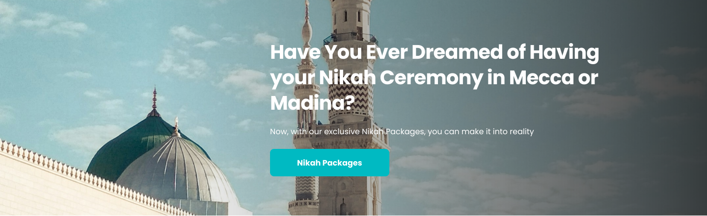

Welcome to the World's First Online Hub for Muslim Services
@@include("partials/introSearch.html")
Popular:
Our partner mediaPopular Services
Popular services providersView all
Our Performance to Handle You.Our metrics component gives you the inside scoop on your success and helps you.
What Others say?
I was struggling with personal issues and feeling overwhelmed. Booking a counseling session through ImamConnect was the best decision I made. The counselor was understanding, compassionate, and provided guidance rooted in Islamic principles.
Lora Smith

Lifestyle QuizzesOne of the most popular searches on ImamConnect is Muslim Marriage Counselling. In order to be of better service to you regarding this service, we, in collaboration with our vetted Muslim counsellors, have designed a tool to do a marriage health check in just 2 minutes
Service Providers Review.See most of our partners using ImamConnect. Be one of them right now.
Putri Azzahra“I’m very happy to be one of service providers at ImamConnect. Really glad I can help so many people in this platform.”
Discover who you are in a relationship.Still don’t understand yourself to get know others better? Book a schedule to understand yourself more.
How it works

Lifetime Muslim Services on One Platform.We offer a lot of services in just 1 click and simple.